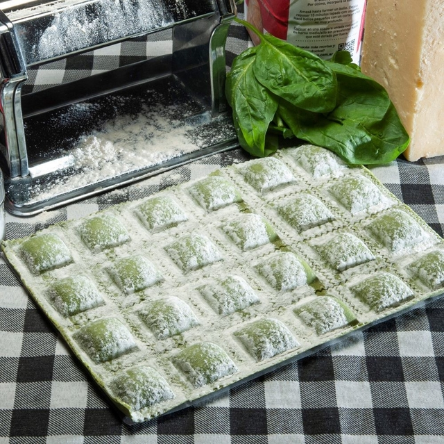

VARIEDAD DE PASTAS
PASTAS RELLENAS

RAVIOLES DE VERDURA
Los ravioles de verdura son una opción deliciosa y saludable. Para hacerlos, primero preparamos un relleno de verduras. El siguiente paso es preparar la masa de los ravioles. Para ello, mezcla harina, huevo, agua y un toque de sal hasta obtener una masa suave. Luego, estira la masa con nuestras máquinas.

CANELONES DE VERDURA
Masa casera preparada con harina, huevos y agua. Relleno tradicional de espinaca y ricota / carne / jamón y queso (según variedad), condimentado con especias naturales. Enrollados a mano y listos para hornear.Sin conservantes. Producto artesanal.

SORRENTINOS DE VERDURA
Masa casera con harina, huevos y agua. Relleno suave de espinaca fresca, ricota y parmesano, con un toque de condimentos naturales.Armados a mano, listos para hervir y servir.Producto artesanal. Sin conservantes. Calidad premium.

CAPELETIS DE VERDURA
Comenzamos con la preparación de una masa a base de harina, huevos y sal, que se amasa hasta obtener una textura firme y elástica, y se deja reposar. Mientras tanto, se prepara un relleno a base de verdura, bien condimentado.

FIOCCHETTI
La elaboración comienza con la preparación de una masa a base de harina y huevos, mezclados hasta obtener una textura lisa y uniforme, luego, se coloca el relleno (generalmente de ricotta u espinaca) en pequeñas porciones sobre la lámina. Se dobla la masa sobre el relleno, se presiona para sellar y se le da forma de moño característico.

RAVIOLES DE RICOTA
Masa casera elaborada con harina y huevos, estirada fina a mano.Relleno clásico de ricota fresca, con un toque de queso rallado y especias naturales.Cerrados uno a uno, con el sabor y la textura de la pasta hecha en casa.Producto artesanal. Sin conservantes. Listos para hervir.

FUSILLI
Pasta seca en forma de espiral. Ideal para salsas livianas o cremosas. Elaboración artesanal.
FARFALE
Con forma de moñito, es perfecta para ensaladas frías o platos con salsas suaves. Ligera y versátil.
RIGATONI
Tubo ancho con estrías, excelente para platos al horno o salsas espesas que se adhieren bien a la superficie.

ÑOQUIS
Pasta hecha con puré de papa natural, harina y huevo, amasada y cortada a máquina.Textura suave y esponjosa, ideales para hervir y acompañar con tu salsa favorita.Producto artesanal. Sin conservantes. Calidad casera.
TALLARINES AL HUEVO
Masa elaborada con harina y huevos frescos, sin agregados.Amasado, estirado y cortado de forma artesanal para lograr una textura firme y sabrosa.Listos para hervir y disfrutar con la salsa que más te guste.Producto artesanal. Sin conservantes.

CARACOLAS
Forma de conchita que atrapa la salsa en su interior. Ideal para niños y recetas al horno.
PANADERIA

TAPA DE EMPANADA
Masa circular, lista para rellenar y hornear o freír. Textura suave y dorado perfecto.
TAPA DE TARTA
Base ideal para tartas dulces o saladas. Masa liviana, lista para el molde y de cocción pareja.
TAPA DE PASTELITOS
Masa hojaldrada, perfecta para rellenar con dulce y freír. Crocante y aireada tras la cocción.

TAPA DE COPETINES
Mini discos de masa ideales para canapés o bocaditos salados. Fáciles de usar y de cocción rápida.

MASA PARA LASAGNA
Láminas caseras listas para armar lasañas caseras. Se adaptan a cualquier relleno y salsa.
MEDIALUNA PARA HORNEAR
Medialunas de manteca de elaboración propia, suaves y frescas, con masa hojaldrada y un delicado sabor a manteca. Listas para hornear.